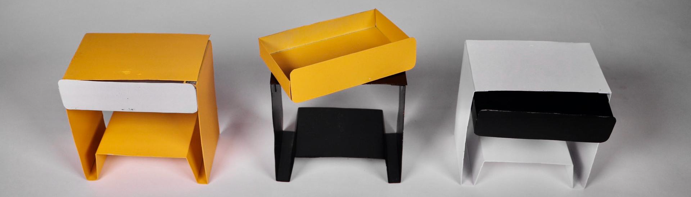
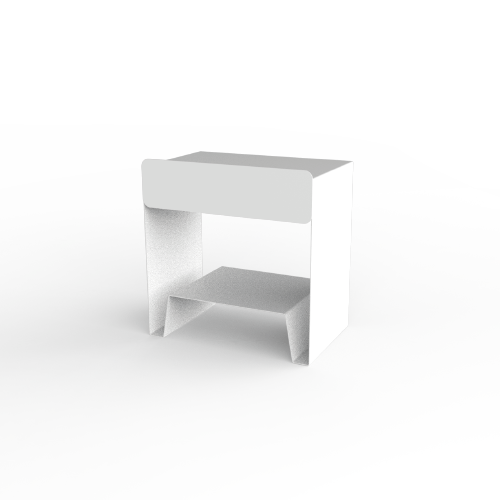
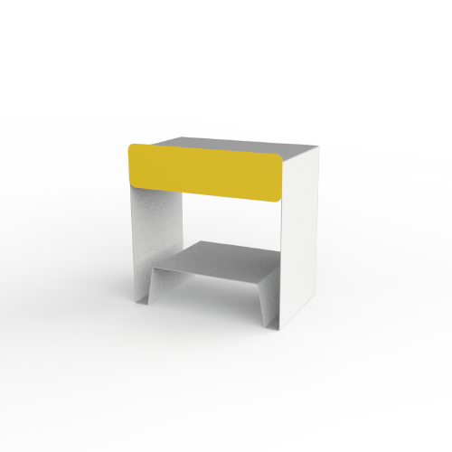

astrid


A ASTRID surgiu de um desafio de transformar um móvel de madeira num móvel de chapa metálica, tornando-se mais acessível e mais fácil de fabricar à partida. As suas formas completamente diferentes do que estamos habituados a ver numa mesinha de cabeceira
surgem da ultrapassagem de alguns constragimentos referentes à nova tecnologia. Assim, para que usássemos o mínimo de placas de chapa metálica possível, assim como parafusos/ferragens para fazer a gaveta deslizar (por
exemplo), usámos recortes na chapa de modo a que, com quinagens, conseguíssemos fazer a perna de trás e, na mesma chapa, as pernas da frente (com os respetivos apoios) e a estrutura que vai suportar a gaveta. De outra
chapa metálica, fizemos a gaveta.

O posicionamento da gaveta e da "prateleira", estão definidos de modo a que seja mais fácil chegar à gaveta quando estamos de pé, e não só para quando estamos deitaos. Ainda aumentámos a profundidade da prateleira de baixo de modo a ser mais fácil guardar/aceder
por exemplo um livro, quando deitados na cama.
Decidimos adotar uma paleta de cores que permitisse inserir esta mesa de cabeceira em ambientes que obedecem ao estilo nórdico/escandinavo: Amarelo, Preto e Branco; E dar a liberdade ao cliente de escolher a cor da estrutura e
da gaveta no caso de querer combiná-las.